Sparse Linear Equations¶
In this section we describe routines for solving sparse sets of linear equations.
A real symmetric or complex Hermitian sparse matrix is stored as an
spmatrix object X of size
( , ) and an
additional character argument uplo with possible values 'L'
and 'U'. If uplo is 'L', the lower triangular part
of X contains the lower triangular part of the symmetric or Hermitian
matrix, and the upper triangular matrix of X is ignored. If uplo
is 'U', the upper triangular part of X contains the upper
triangular part of the matrix, and the lower triangular matrix of X is
ignored.
, ) and an
additional character argument uplo with possible values 'L'
and 'U'. If uplo is 'L', the lower triangular part
of X contains the lower triangular part of the symmetric or Hermitian
matrix, and the upper triangular matrix of X is ignored. If uplo
is 'U', the upper triangular part of X contains the upper
triangular part of the matrix, and the lower triangular matrix of X is
ignored.
A general sparse square matrix of order is represented by an
spmatrix object of size (, ).
Dense matrices, which appear as right-hand sides of equations, are stored using the same conventions as in the BLAS and LAPACK modules.
Matrix Orderings¶
CVXOPT includes an interface to the AMD library for computing approximate minimum degree orderings of sparse matrices.
See also
- AMD code, documentation, copyright, and license
- P. R. Amestoy, T. A. Davis, I. S. Duff, Algorithm 837: AMD, An Approximate Minimum Degree Ordering Algorithm, ACM Transactions on Mathematical Software, 30(3), 381-388, 2004.
- cvxopt.amd.order(A[, uplo = 'L'])¶
Computes the approximate mimimum degree ordering of a symmetric sparse matrix
 . The ordering is returned as an integer dense matrix
with length equal to the order of . Its entries specify a
permutation that reduces fill-in during the Cholesky factorization.
More precisely, if p = order(A) , then A[p, p] has
sparser Cholesky factors than A.
. The ordering is returned as an integer dense matrix
with length equal to the order of . Its entries specify a
permutation that reduces fill-in during the Cholesky factorization.
More precisely, if p = order(A) , then A[p, p] has
sparser Cholesky factors than A.
As an example we consider the matrix
![\left[ \begin{array}{rrrr}
10 & 0 & 3 & 0 \\
0 & 5 & 0 & -2 \\
3 & 0 & 5 & 0 \\
0 & -2 & 0 & 2
\end{array}\right].](_images/math/d6eaef0ba36a702d7918e25eeb5b544e3f24f035.png)
>>> from cvxopt import spmatrix, amd
>>> A = spmatrix([10,3,5,-2,5,2], [0,2,1,2,2,3], [0,0,1,1,2,3])
>>> P = amd.order(A)
>>> print(P)
[ 1]
[ 0]
[ 2]
[ 3]
General Linear Equations¶
The module cvxopt.umfpack includes four functions for solving sparse non-symmetric sets of linear equations. They call routines from the UMFPACK library, with all control options set to the default values described in the UMFPACK user guide.
See also
- UMFPACK code, documentation, copyright, and license
- T. A. Davis, Algorithm 832: UMFPACK – an unsymmetric-pattern multifrontal method with a column pre-ordering strategy, ACM Transactions on Mathematical Software, 30(2), 196-199, 2004.
- cvxopt.umfpack.linsolve(A, B[, trans = 'N'])¶
Solves a sparse set of linear equations
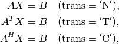
where
is a sparse matrix and  is a dense matrix.
The arguments A and B must have the same type
('d' or 'z') as A. On exit B contains
the solution. Raises an ArithmeticError if the coefficient
matrix is singular.
is a dense matrix.
The arguments A and B must have the same type
('d' or 'z') as A. On exit B contains
the solution. Raises an ArithmeticError if the coefficient
matrix is singular.
In the following example we solve an equation with coefficient matrix
(1)![A = \left[\begin{array}{rrrrr}
2 & 3 & 0 & 0 & 0 \\
3 & 0 & 4 & 0 & 6 \\
0 &-1 &-3 & 2 & 0 \\
0 & 0 & 1 & 0 & 0 \\
0 & 4 & 2 & 0 & 1
\end{array}\right].](_images/math/6fea0b5ad40e6222f621a260aeb1fc3d0b2d1e59.png)
>>> from cvxopt import spmatrix, matrix, umfpack
>>> V = [2, 3, 3, -1, 4, 4, -3, 1, 2, 2, 6, 1]
>>> I = [0, 1, 0, 2, 4, 1, 2, 3, 4, 2, 1, 4]
>>> J = [0, 0, 1, 1, 1, 2, 2, 2, 2, 3, 4, 4]
>>> A = spmatrix(V,I,J)
>>> B = matrix(1.0, (5,1))
>>> umfpack.linsolve(A,B)
>>> print(B)
[ 5.79e-01]
[-5.26e-02]
[ 1.00e+00]
[ 1.97e+00]
[-7.89e-01]
The function linsolve is equivalent to the following three functions called in sequence.
- cvxopt.umfpack.symbolic(A)¶
Reorders the columns of A to reduce fill-in and performs a symbolic LU factorization. A is a sparse, possibly rectangular, matrix. Returns the symbolic factorization as an opaque C object that can be passed on to numeric.
- cvxopt.umfpack.numeric(A, F)¶
Performs a numeric LU factorization of a sparse, possibly rectangular, matrix A. The argument F is the symbolic factorization computed by symbolic applied to the matrix A, or another sparse matrix with the same sparsity pattern, dimensions, and type. The numeric factorization is returned as an opaque C object that that can be passed on to solve. Raises an ArithmeticError if the matrix is singular.
- cvxopt.umfpack.solve(A, F, B[, trans = 'N'])¶
Solves a set of linear equations
where
is a sparse matrix and is a dense matrix.
The arguments A and B must have the same type. The argument
F is a numeric factorization computed
by numeric.
On exit B is overwritten by the
solution.
These separate functions are useful for solving several sets of linear equations with the same coefficient matrix and different right-hand sides, or with coefficient matrices that share the same sparsity pattern. The symbolic factorization depends only on the sparsity pattern of the matrix, and not on the numerical values of the nonzero coefficients. The numerical factorization on the other hand depends on the sparsity pattern of the matrix and on its the numerical values.
As an example, suppose is the matrix (1) and
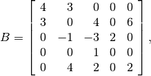
which differs from in its first and last entries. The following
code computes
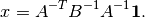
>>> from cvxopt import spmatrix, matrix, umfpack
>>> VA = [2, 3, 3, -1, 4, 4, -3, 1, 2, 2, 6, 1]
>>> VB = [4, 3, 3, -1, 4, 4, -3, 1, 2, 2, 6, 2]
>>> I = [0, 1, 0, 2, 4, 1, 2, 3, 4, 2, 1, 4]
>>> J = [0, 0, 1, 1, 1, 2, 2, 2, 2, 3, 4, 4]
>>> A = spmatrix(VA, I, J)
>>> B = spmatrix(VB, I, J)
>>> x = matrix(1.0, (5,1))
>>> Fs = umfpack.symbolic(A)
>>> FA = umfpack.numeric(A, Fs)
>>> FB = umfpack.numeric(B, Fs)
>>> umfpack.solve(A, FA, x)
>>> umfpack.solve(B, FB, x)
>>> umfpack.solve(A, FA, x, trans='T')
>>> print(x)
[ 5.81e-01]
[-2.37e-01]
[ 1.63e+00]
[ 8.07e+00]
[-1.31e-01]
Positive Definite Linear Equations¶
cvxopt.cholmod is an interface to the Cholesky factorization routines
of the CHOLMOD package. It includes functions for Cholesky factorization
of sparse positive definite matrices, and for solving sparse sets of linear
equations with positive definite matrices.
The routines can also be used for computing
LDLT
(or
LDLH
factorizations
of symmetric indefinite matrices (with  unit lower-triangular and
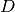 diagonal and nonsingular) if such a factorization exists.
unit lower-triangular and
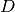 diagonal and nonsingular) if such a factorization exists.
- cvxopt.cholmod.linsolve(A, B[, p = None, uplo = 'L'])¶
Solves

with
sparse and real symmetric or complex Hermitian.B is a dense matrix of the same type as A. On exit it is overwritten with the solution. The argument p is an integer matrix with length equal to the order of
, and specifies an
optional reordering. If p is not specified, CHOLMOD uses a
reordering from the AMD library.Raises an ArithmeticError if the factorization does not exist.
As an example, we solve
(2)![\left[ \begin{array}{rrrr}
10 & 0 & 3 & 0 \\
0 & 5 & 0 & -2 \\
3 & 0 & 5 & 0 \\
0 & -2 & 0 & 2
\end{array}\right] X =
\left[ \begin{array}{cc}
0 & 4 \\ 1 & 5 \\ 2 & 6 \\ 3 & 7
\end{array} \right].](_images/math/5589a714a734f3834cc4aead152691d7517b01d0.png)
>>> from cvxopt import matrix, spmatrix, cholmod
>>> A = spmatrix([10, 3, 5, -2, 5, 2], [0, 2, 1, 3, 2, 3], [0, 0, 1, 1, 2, 3])
>>> X = matrix(range(8), (4,2), 'd')
>>> cholmod.linsolve(A,X)
>>> print(X)
[-1.46e-01 4.88e-02]
[ 1.33e+00 4.00e+00]
[ 4.88e-01 1.17e+00]
[ 2.83e+00 7.50e+00]
- cvxopt.cholmod.splinsolve(A, B[, p = None, uplo = 'L'])¶
Similar to linsolve except that B is an spmatrix and that the solution is returned as an output argument (as a new spmatrix). B is not modified.
The following code computes the inverse of the coefficient matrix in (2) as a sparse matrix.
>>> X = cholmod.splinsolve(A, spmatrix(1.0,range(4),range(4)))
>>> print(X)
[ 1.22e-01 0 -7.32e-02 0 ]
[ 0 3.33e-01 0 3.33e-01]
[-7.32e-02 0 2.44e-01 0 ]
[ 0 3.33e-01 0 8.33e-01]
The functions linsolve and splinsolve are equivalent to symbolic and numeric called in sequence, followed by solve, respectively, spsolve.
- cvxopt.cholmod.symbolic(A[, p = None, uplo = 'L'])¶
Performs a symbolic analysis of a sparse real symmetric or complex Hermitian matrix
for one of the two factorizations:(3)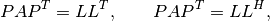
and
(4)

where
 is a permutation matrix, is lower triangular
(unit lower triangular in the second factorization), and is
nonsingular diagonal. The type of factorization depends on the value
of options['supernodal'] (see below).
is a permutation matrix, is lower triangular
(unit lower triangular in the second factorization), and is
nonsingular diagonal. The type of factorization depends on the value
of options['supernodal'] (see below).If uplo is 'L', only the lower triangular part of A is accessed and the upper triangular part is ignored. If uplo is 'U', only the upper triangular part of A is accessed and the lower triangular part is ignored.
If p is not provided, a reordering from the AMD library is used.
The symbolic factorization is returned as an opaque C object that can be passed to numeric.
- cvxopt.cholmod.numeric(A, F)¶
Performs a numeric factorization of a sparse symmetric matrix as (3) or (4). The argument F is the symbolic factorization computed by symbolic applied to the matrix A, or to another sparse matrix with the same sparsity pattern and typecode, or by numeric applied to a matrix with the same sparsity pattern and typecode as A.
If F was created by a symbolic with uplo equal to 'L', then only the lower triangular part of A is accessed and the upper triangular part is ignored. If it was created with uplo equal to 'U', then only the upper triangular part of A is accessed and the lower triangular part is ignored.
On successful exit, the factorization is stored in F. Raises an ArithmeticError if the factorization does not exist.
- cvxopt.cholmod.solve(F, B[, sys = 0])¶
Solves one of the following linear equations where B is a dense matrix and F is the numeric factorization (3) or (4) computed by numeric. sys is an integer with values between 0 and 8.
sys equation 0 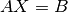 1 
2 
3 
4 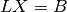 5 
6 
7 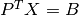 8 
(If F is a Cholesky factorization of the form (3), is an identity matrix in this table. If A is complex, 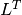 should be replaced by
 .)
.)The matrix B is a dense 'd' or 'z' matrix, with the same type as A. On exit it is overwritten by the solution.
- cvxopt.cholmod.spsolve(F, B[, sys = 0])¶
Similar to solve, except that B is a class:spmatrix, and the solution is returned as an output argument (as an spmatrix). B must have the same typecode as A.
For the same example as above:
>>> X = matrix(range(8), (4,2), 'd')
>>> F = cholmod.symbolic(A)
>>> cholmod.numeric(A, F)
>>> cholmod.solve(F, X)
>>> print(X)
[-1.46e-01 4.88e-02]
[ 1.33e+00 4.00e+00]
[ 4.88e-01 1.17e+00]
[ 2.83e+00 7.50e+00]
- cvxopt.cholmod.diag(F)¶
Returns the diagonal elements of the Cholesky factor
in (3), as a dense matrix of the same type as A.
Note that this only applies to Cholesky factorizations. The matrix
in an LDLT
factorization can be retrieved via solve
with sys equal to 6.
In the functions listed above, the default values of the control parameters described in the CHOLMOD user guide are used, except for Common->print which is set to 0 instead of 3 and Common->supernodal which is set to 2 instead of 1. These parameters (and a few others) can be modified by making an entry in the dictionary cholmod.options. The meaning of these parameters is as follows.
- options['supernodal']
- If equal to 0, a factorization (4) is computed using a simplicial algorithm. If equal to 2, a factorization (3) is computed using a supernodal algorithm. If equal to 1, the most efficient of the two factorizations is selected, based on the sparsity pattern. Default: 2.
- options['print']
- A nonnegative integer that controls the amount of output printed to the screen. Default: 0 (no output).
As an example that illustrates diag and the use of cholmod.options, we compute the logarithm of the determinant of the coefficient matrix in (2) by two methods.
>>> import math
>>> from cvxopt.cholmod import options
>>> from cvxopt import log
>>> F = cholmod.symbolic(A)
>>> cholmod.numeric(A, F)
>>> print(2.0 * sum(log(cholmod.diag(F))))
5.50533153593
>>> options['supernodal'] = 0
>>> F = cholmod.symbolic(A)
>>> cholmod.numeric(A, F)
>>> Di = matrix(1.0, (4,1))
>>> cholmod.solve(F, Di, sys=6)
>>> print(-sum(log(Di)))
5.50533153593
Example: Covariance Selection¶
This example illustrates the use of the routines for sparse Cholesky factorization. We consider the problem
(5)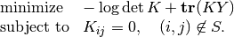
The optimization variable is a symmetric matrix  of order
and the domain of the problem is the set of positive definite
matrices. The matrix
of order
and the domain of the problem is the set of positive definite
matrices. The matrix  and the index set 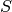 are given.
We assume that all the diagonal positions are included in .
This problem arises in maximum likelihood estimation of the covariance
matrix of a zero-mean normal distribution, with constraints
that specify that pairs of variables are conditionally independent.
and the index set 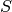 are given.
We assume that all the diagonal positions are included in .
This problem arises in maximum likelihood estimation of the covariance
matrix of a zero-mean normal distribution, with constraints
that specify that pairs of variables are conditionally independent.
We can express as
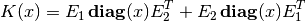
where  are the nonzero elements in the lower triangular part of
, with the diagonal elements scaled by 1/2, and
are the nonzero elements in the lower triangular part of
, with the diagonal elements scaled by 1/2, and
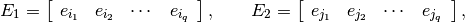
where ( ,
,  ) are the positions of the nonzero entries
in the lower-triangular part of . With this notation, we can
solve problem (5) by solving the unconstrained problem
) are the positions of the nonzero entries
in the lower-triangular part of . With this notation, we can
solve problem (5) by solving the unconstrained problem
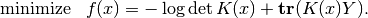
The code below implements Newton’s method with a backtracking line search. The gradient and Hessian of the objective function are given by
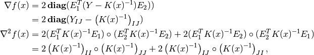
where  denotes Hadamard product.
denotes Hadamard product.
from cvxopt import matrix, spmatrix, log, mul, blas, lapack, amd, cholmod
def covsel(Y):
"""
Returns the solution of
minimize -log det K + Tr(KY)
subject to K_{ij}=0, (i,j) not in indices listed in I,J.
Y is a symmetric sparse matrix with nonzero diagonal elements.
I = Y.I, J = Y.J.
"""
I, J = Y.I, Y.J
n, m = Y.size[0], len(I)
N = I + J*n # non-zero positions for one-argument indexing
D = [k for k in range(m) if I[k]==J[k]] # position of diagonal elements
# starting point: symmetric identity with nonzero pattern I,J
K = spmatrix(0.0, I, J)
K[::n+1] = 1.0
# Kn is used in the line search
Kn = spmatrix(0.0, I, J)
# symbolic factorization of K
F = cholmod.symbolic(K)
# Kinv will be the inverse of K
Kinv = matrix(0.0, (n,n))
for iters in range(100):
# numeric factorization of K
cholmod.numeric(K, F)
d = cholmod.diag(F)
# compute Kinv by solving K*X = I
Kinv[:] = 0.0
Kinv[::n+1] = 1.0
cholmod.solve(F, Kinv)
# solve Newton system
grad = 2*(Y.V - Kinv[N])
hess = 2*(mul(Kinv[I,J],Kinv[J,I]) + mul(Kinv[I,I],Kinv[J,J]))
v = -grad
lapack.posv(hess,v)
# stopping criterion
sqntdecr = -blas.dot(grad,v)
print("Newton decrement squared:%- 7.5e" %sqntdecr)
if (sqntdecr < 1e-12):
print("number of iterations: ", iters+1)
break
# line search
dx = +v
dx[D] *= 2 # scale the diagonal elems
f = -2.0 * sum(log(d)) # f = -log det K
s = 1
for lsiter in range(50):
Kn.V = K.V + s*dx
try:
cholmod.numeric(Kn, F)
except ArithmeticError:
s *= 0.5
else:
d = cholmod.diag(F)
fn = -2.0 * sum(log(d)) + 2*s*blas.dot(v,Y.V)
if (fn < f - 0.01*s*sqntdecr):
break
s *= 0.5
K.V = Kn.V
return K